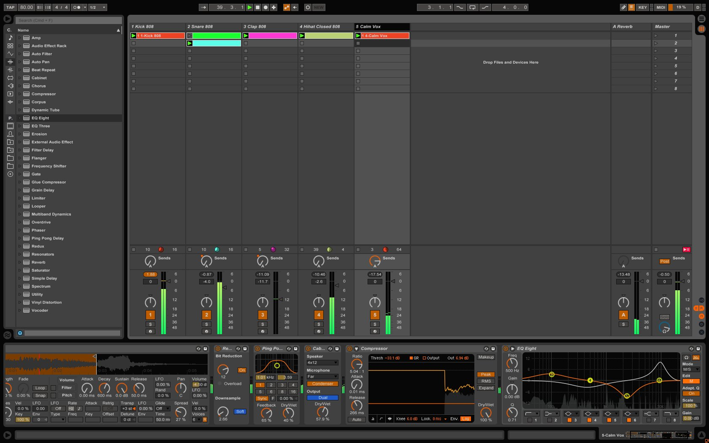

Software DAW
"DAW" can simply refer to the software itself, but traditionally, a computer-based DAW has four basic components: a computer, either a sound card or audio interface, digital audio editor software, and at least one input device for adding or modifying data. This could be as simple as a mouse (if no external instruments are used) or as sophisticated as a piano-style MIDI controller keyboard or automated fader board for mixing track volumes. The computer acts as a host for the sound card/audio interface, while the software provides the interface and functionality for audio editing. The sound card/external audio interface typically converts analog audio signals into digital form, and digital back to analog audio when playing it back; it may also assist in further processing of the audio. The software controls all related hardware components and provides a user interface to allow for recording, editing, and playback. Computer-based DAWs have extensive recording, editing, and playback capabilities (some even have video-related features). For example, musically, they can provide a near-infinite increase in additional tracks to record on, polyphony, and virtual synthesizer or sample-based instruments to use for recording music. A DAW with a sampled string section emulator can be used to add string accompaniment "pads" to a pop song. DAWs can also provide a wide variety of effects, such as reverb, to enhance or change the sounds themselves. Simple smartphone-based DAWs, called Mobile Audio Workstation (MAWs), are used (for example) by journalists for recording and editing on location. Many are sold on app stores such as the iOS App Store or Google Play.
